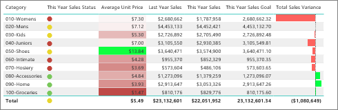

Chapter 2 Types of visualization
There are many types of visualization, some popular ones being:
2.1 Charts

Figure 2.1: Source: https://www.vertex42.com/edu/charts-and-graphs-in-excel.html
2.2 Tables

Figure 2.2: Source: https://docs.microsoft.com/en-us/power-bi/visuals/power-bi-visualization-tables
Figure 2.3: Source: https://www.dundas.com/dundas-bi/features
2.3 Graphs
Figure 2.4: Source: https://www.livestories.com/blog/five-ways-to-fail-data-visualization